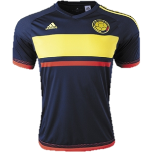

COLOMBIA JERSEY |
.png) |
Powered by fans, this is Arsenals official jersey for the 15/16 season.
As always, Arsenal wears a red shirt in 15/16 with white sleeves when competing in North London, a practice that dates back to innovative manager Sir Herbert Chapman.
This year, PUMA plays off of that with a formal and elegant look befitting of London’s high fashion. They use a granddad collar, subtle pinstripes, jacquard hoops and a Victory Gold trim that’s exclusive to the Gunners.
As always, Arsenal wears a red shirt in 15/16 with white sleeves when competing in North London, a practice that dates back to innovative manager Sir Herbert Chapman.
This year, PUMA plays off of that with a formal and elegant look befitting of London’s high fashion. They use a granddad collar, subtle pinstripes, jacquard hoops and a Victory Gold trim that’s exclusive to the Gunners.